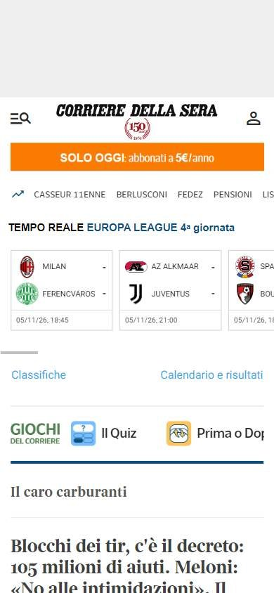
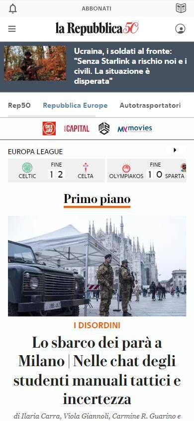
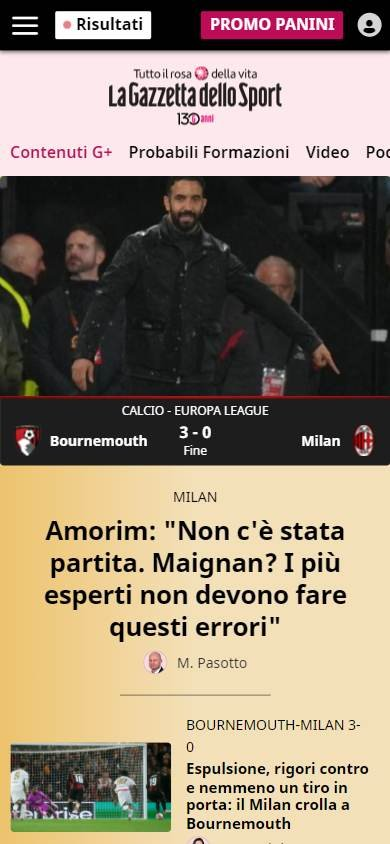

Sitio informativo o de noticias
Los seleccionados
Los tres sitios más visitados de Italia, según estadísticas de tráfico.
En resumen: lo que hacen los líderes
La pantalla de inicio de cada uno



Estilo visual
Colores, imágenes, tipografía y cuánta información muestran.
Tu estilo visual debería…
- Tipografía clásica y paleta sobria; si tu marca tiene un color histórico, aprovechalo.
Lo que tienen en común: Blanco y negro con tipografía clásica; La Gazzetta se distingue con su rosa histórico.
La paleta de cada uno
Medida sobre la primera pantalla. Los colores de marca salen del header; el resto muestra cuánto espacio ocupa cada color.
Así lo resuelve cada uno
Ficha comparativa
| Aspecto | Corriere della Sera | la Repubblica | La Gazzetta dello Sport |
|---|---|---|---|
| Paleta | Acotada: blanco y negro | Acotada: blanco y negro + rojo | Acotada: rosa histórico + negro |
| Imágenes | Fotos medianas | Fotos medianas | Fotos grandes |
| Tipografía | Logo gótico + serifa | Serifa | Sin serifa |
| Densidad | Alta | Alta | Media |
Header
La franja de arriba con el logo y los accesos.
Tu header debería…
- Logo centrado y grande, como la tapa del diario impreso.
- Si tu marca tiene un color histórico, usalo de fondo.
Lo que tienen en común: Logo grande y centrado con tipografía tradicional, fecha arriba y acceso a la cuenta a la derecha. La Gazzetta usa su rosa histórico.
Así lo resuelve cada uno


Ficha comparativa
| Aspecto | Corriere della Sera | la Repubblica | La Gazzetta dello Sport |
|---|---|---|---|
| Fondo | Blanco | Blanco | Rosa claro (color histórico del diario) |
| Logo | Centrado, gótico | Centrado, con serifa | Centrado |
| A la derecha | «Accedi» | Edición y «Accedi» | Cuenta |
| Fecha y clima | Sí | Sí | No |
Menú y categorías
Cómo se organizan las secciones.
Tu menú y categorías debería…
- Fila de secciones debajo del logo; si cubrís deportes, una franja de resultados en vivo.
Lo que tienen en común: Secciones debajo del logo y, muchas veces, una franja de resultados deportivos en vivo.
Así lo resuelve cada uno

Ficha comparativa
| Aspecto | Corriere della Sera | la Repubblica | La Gazzetta dello Sport |
|---|---|---|---|
| Formato | Fila de secciones con desplegables debajo del logo | Desplegables «Sezioni» y «Edizioni locali» | Fila de deportes |
| Resultados en vivo | Sí, tabla de partidos | Sí, tabla de partidos | Sí |
Primera pantalla
Lo primero que se ve debajo del header.
Tu primera pantalla debería…
- Un bloque titulado «Lo principal» con la noticia principal y su foto.
Lo que tienen en común: La sección «Primo piano» (primer plano) agrupa la noticia principal con foto grande.
Así lo resuelve cada uno
Ficha comparativa
| Aspecto | Corriere della Sera | la Repubblica | La Gazzetta dello Sport |
|---|---|---|---|
| Formato | Titulares + foto | «Primo piano» con foto | «Primo piano» con foto grande + notas al costado |